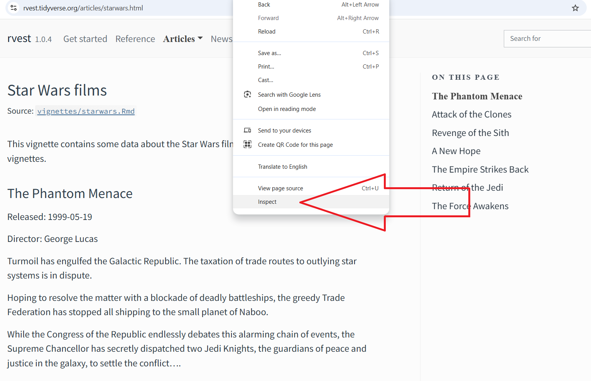
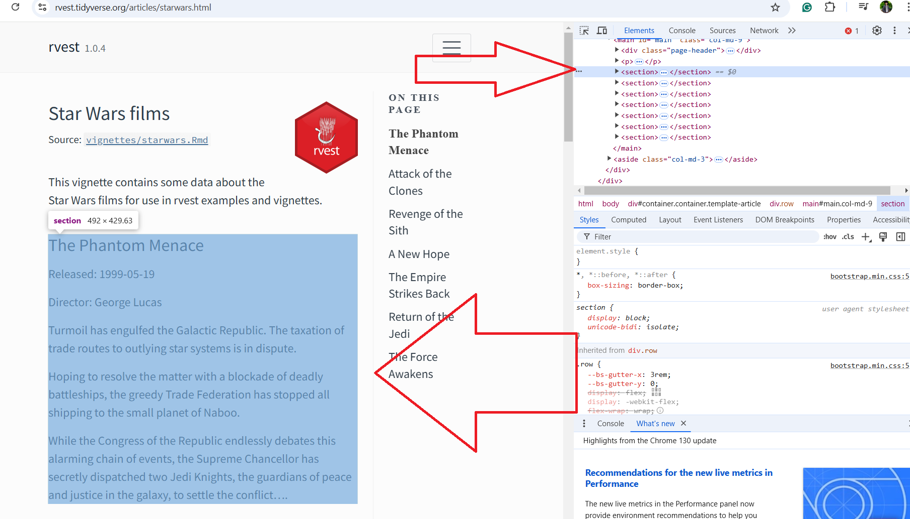
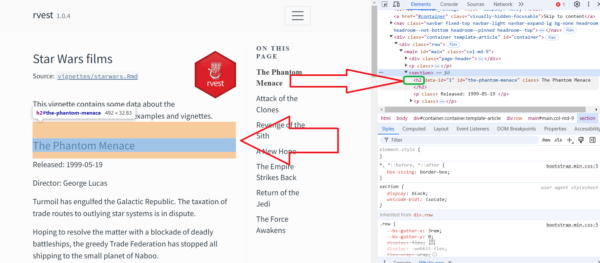
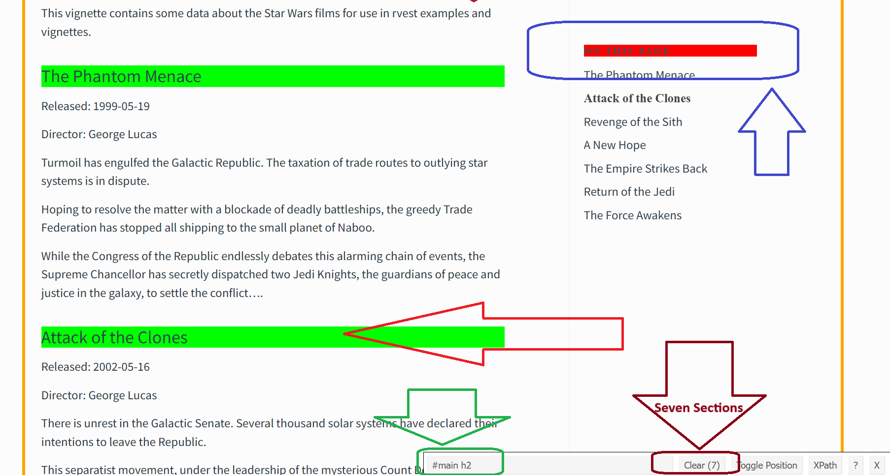
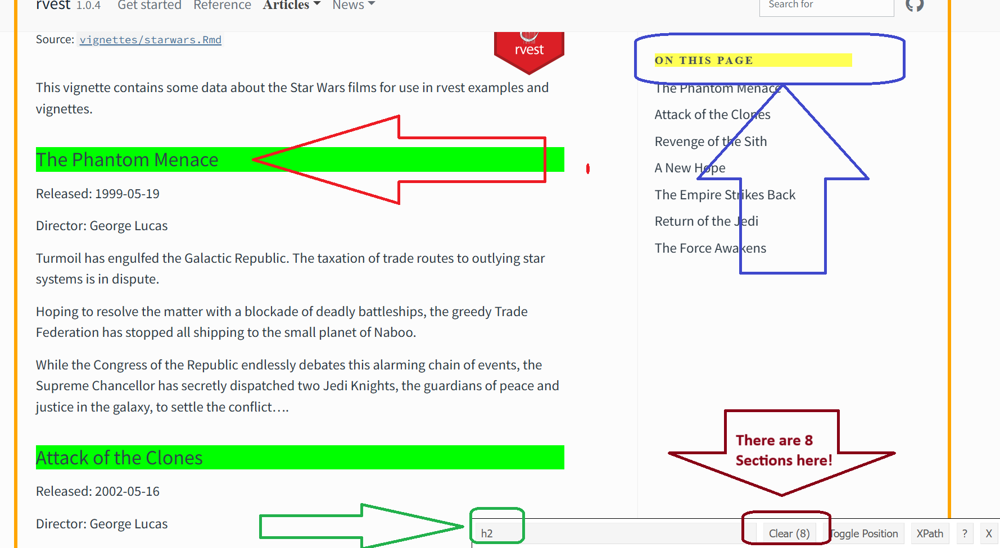

In this lesson, our goal is to scrape data directly from the HTML of a webpage. We will delve into how to parse the HTML content and extract the data you need, without relying on pre-formatted files or APIs.
Introduction
In our previous discussions, we’ve focused on web scraping, where we learned how to extract data and save it in various formats such as CSV, TXT, or XLS files. Additionally, we’ve explored how to use packages to interact directly with APIs.
Before we move forward, let’s differentiate between web scraping and web crawling
Web Scraping vs. Web Crawling
Web Scraping refers to the process of extracting specific data from web pages. This involves downloading the HTML content of a webpage and then parsing it to collect the desired information. Web scraping is the process of extracting specific data from a webpage, such as text, images, or links, for later use.
Simple Example: If you want to collect product prices from an e-commerce website, you would use scraping to get the price information from each product page.
Web Crawlin
Web Crawling
Web crawling is the process of automatically navigating through websites, following links from one page to another, to gather or index content from various pages across the web.
Simple Example: A search engine like Google uses web crawling to visit webpages, gather information, and add those pages to its index.
Key Difference
Key Difference:
Web scraping is about extracting specific data from a single page or set of pages, while
web crawling is about systematically exploring multiple pages and following links across websites.
Web scarping
Web scarping is a technique for converting data (in unstructured format) to a structured format which can be used
Example of Structured Data:
A spreadsheet with customer information, where each row represents a customer and each column includes fields like “Name,” “Age,” “Email,” and “Purchase Amount.”
Example of Unstructured Data:
A collection of customer reviews in free-text form, where people can write anything they want about their experience.
Web scraping is a very useful tool for extracting data from web pages. Some websites will offer an API, a set of structured HTTP requests that return data as JSON, which you handle using the techniques from the note webscraping_2.pdf. Where possible, you should use the API, because typically it will give you more reliable data.
Static vs. Dynamic Web Pages
Static web page
The content is all there in the HTML sent by the server.
When you open the page, you already see everything in the source code.
Easy to scrape with functions like rvest::read_html().
Dynamic web page
The content is loaded or changed by JavaScript after the page loads.
When you first open the page, some content may not be in the HTML yet.
Harder to scrape — you may need tools that run JavaScript, like chromote, httr::live_session, or Playwright.
Key Points
Static pages usually send the full HTML content in the initial server response. TRUE
Example: a simple blog page. You can see all the posts by viewing page source.
Dynamic pages may require executing JavaScript to load the full content. TRUE
Example: a product page where prices or images load after the page finishes loading.
Dynamic pages may require tools like httr::live_session, chromote, or Playwright to manipulate the page to capture all the desired content. TRUE
These tools simulate a real browser and run the JavaScript so you can get the full content.
Static pages can only be scraped with APIs, not with HTML parsing. FALSE
Static pages can be scraped directly with HTML parsing (like rvest::read_html()).
APIs are optional; they’re just another way to get the data.
Simple analogy
Static page → a printed book: all the content is already there.
Dynamic page → a TV screen: some things appear after you press buttons or wait for animations.
Scraping ethics and legalities
Legalities
Legalities depend a lot on where you live. However, as a general principle,
if the data is public, non-personal, and factual, you’re likely to be ok.
If the data isn’t public, non-personal, or factual or you’re scraping the data specifically to make money with it, you’ll need to talk to a lawyer.
To scrape webpages, you need to first understand a little bit about HTML, the language that describes web pages.
Terms of service (TOS)
If you look closely, you’ll find many websites include a “terms and conditions” or “terms of service” link somewhere on the page, and if you read that page closely you’ll often discover that the site specifically prohibits web scraping.
Personally identifiable information
Even if the data is public, you should be extremely careful about scraping personally identifiable information like names, email addresses, phone numbers, dates of birth, etc.
Copyright
You also need to worry about copyright law. Copyright law is complicated, but it’s worth taking a look at the US law which describes exactly what’s protected.
A quick review from “webscraping_2.pdf” - Directly Access APIs
HTTP or Hypertext Transfer Protocol
Web Browser vs Web-Based Application
A web browser and a web-based application are both essential to interacting with content on the internet, but they serve different purposes:
Web Browser
1. Web Browser
A web browser is software that allows users to access and view websites and web-based applications on the internet. Examples include Chrome, Firefox, Safari, and Edge. Web browsers interpret HTML, CSS, and JavaScript code from websites and display it in a way that’s understandable to users.based applications.
Web-Based Application
2. Web-Based Application
A web-based application (or web app) is an application that runs on a web server and can be accessed through a web browser. Instead of installing software locally, users interact with the application through the browser over the internet. Examples include Gmail, Google Docs, and online document editors. Web apps are designed to provide functionality (like editing documents, sending messages, or managing tasks) directly in the browser.
HTTP
It is a protocol to used for transferring data over internet. It is the Foundation of Data Communication on the World Wide Web and is used by most websites and web-based applications.
When we access a website or an API through our web browser, or web-based application, your device sends an HTTP request to the server hosting the website or API. The server then send an HTTP response back to our device, containing the request data or resources.
HTTP defines a set of rules and standards for how these requests and responses are formatted and transmitted, including how data is structured, how errors are handled, and how security is enforced.
By using a common protocol like HTTP, different devices and systems can communicated and exchange data with each other over the internet, regardless of their underlying hardware or software.
Web page Structure
Webpages are usually consists of two types of code.
One focus on the appearance and format of the page called HTML -The other one Called XML similar to HTML but focus more on managing data in web.
The content is the text or elements between the opening and closing tags. This is what will be displayed on the webpage. For instance, in <p>Hello World</p>, “Hello World” is the content.
HTML Element
Element: An element is a complete structure that includes both the opening tag, the content, and the closing tag. For example, <p>Hello World</p> is a paragraph element.
Summary
In HTML:
Tag: A tag is a keyword surrounded by angle brackets (< >) that tells the browser how to display content. Example: <h1> is a tag for a heading.
Attributes: Attributes are additional information about an element, written inside the opening tag. Example: <a href="https://example.com">Link</a>. Here, href is an attribute that specifies the link destination.
Contents: The contents are the actual data or text between the opening and closing tags. For example, in <p>Hello, world!</p>, “Hello, world!” is the content.
Element: An element consists of the opening tag, contents, and the closing tag. For example, <p>Hello, world!</p> is a complete paragraph element.
Think of HTML as a way to tell a web browser how to display a page. HTML uses tags to define different parts of the page.
Valid HTML tags you might target when scraping
These are the common “boxes” on a webpage you might want to grab:
Tag
What it usually means
Example
<h1>, <h2>, <h3>
Headings
Titles or subtitles
<p>
Paragraph
Text content
<a>
Link
Clickable link (href)
<img>
Image
Images (src)
<div>
Division / section
Group of elements
<span>
Inline text
Part of text inside a paragraph
<ul>, <ol>
Lists
Bulleted or numbered lists
<li>
List item
Each item in a list
<table>
Table
Tabular data
<tr>
Table row
One row of a table
<td>
Table cell
Data in a row
<th>
Table header
Header of a table column
Tip for scraping
Look for tags that contain the data you want.
Often you combine the tag with a class or id using a CSS selector.
Example: div.product
Example:div.product\(\to\) grab all <div> elements with class="product"
Imagine a webpage has boxes for each product.
Each box is a <div> element.
The ones that are products have class=“product”.
So when we say:
div.product
It means:
“Find all <div> boxes that have the class called product.”
It will grab all product sections and ignore other <div>s, like ads or headers.
Why it’s useful
Each product’s name, price, and details are inside that <div class="product">.
By grabbing the div.product first, you can then look inside it for the specific info you want.
Basic HTML Structure
HTML Tags: Every HTML document needs certain tags to work properly. These tags tell the browser that it’s an HTML file and provide the basic structure.
Necessary Tags:
<html>: This tag tells the browser where the HTML document starts and ends. It’s like the “container” for the whole page.
<head>: This section is where you put important information about the document (e.g., title, character set, links to stylesheets). This information won’t show on the page but helps the browser understand it.
<title>: The title tag (inside <head>) defines the title shown in the browser tab.
<body>: This tag is where all the content that you want to display on the webpage goes, like text, images, and links.
Order of Tags:
Your HTML document should follow this order:
<!DOCTYPE html><html><head><title>Your Page Title</title></head><body><!-- Content goes here --></body></html>
Notice the <!DOCTYPE html> at the top. This isn’t a tag, but a declaration that tells the browser this is an HTML5 document.
<!DOCTYPE html>
The <!DOCTYPE html> line at the top of an HTML file tells the browser to use the latest web standards when displaying the page. Without it, the browser might switch to an older, less consistent way of showing the content, which can cause things like spacing and layout to look different or broken on some browsers. Even though you might not see an immediate difference if you remove it, using <!DOCTYPE html> makes sure your page looks right across all modern browsers and follows the best practices for web design.
Examples of a Simple HTML Page
Example 1:
Here’s an example to help you visualize:
<!DOCTYPE html><html><head><title>My First Web Page</title></head><body><h1>Welcome to My Page</h1><p>This is a paragraph of text on my webpage.</p></body></html>
Explanation:
<!DOCTYPE html>: Declares that this is an HTML5 document.
<html>: The root tag for the HTML document.
<head>: Contains information about the document (like the title).
<title>: Sets the title shown in the browser tab.
<body>: Contains the content of the webpage.
<h1>: A heading tag, used for main headings.
<p>: A paragraph tag, used for blocks of text.
Key Points to Remember
Every opening tag (like <html>) should have a closing tag (like </html>).
The basic structure is always:
<!DOCTYPE html>
<html> … </html>
<head> … </head>
<body> … </body>
Following this structure will ensure your HTML page works correctly!
Example 2: Adding a Line Break and an Image
<!DOCTYPE html><html><body><p>The First image is Imperial State of Iran in 1970s.<br> The Second is Islamic Republic or Iran Now.</p><img src="image.jpg"alt="Iran 1970s"><img src="image2.jpg"alt="Iran Now"></body></html>
Explanation:
<br>: Inserts a line break, moving the text after it to a new line.
<img>: Embeds an image. It has two attributes:
src: Specifies the path to the image file.
alt: Provides alternative text for the image, displayed if the image cannot load.
Example 3: Adding Links and Lists
<!DOCTYPE html><html><body><p>Check out <a href="https://github.com/">this website</a>!</p><ul><li>Item 1</li><li>Item 2</li><li>Item 3</li></ul></body></html>
Explanation:
<a href="URL">: Creates a hyperlink. The href attribute specifies the link’s destination.
<ul>: Creates an unordered (bulleted) list.
<li>: Defines an item in a list.
HTML Editors
Using Notepad or TextEdit
Step 1: Open Notepad (PC) or TextEdit (Mac)
Step 2: Write Some HTML. You may want to write or copy the HTML code we had into Notepad.
Step 3: Save the HTML Page. Fot instance first.htm. You can use either .htm or .html as file extension. There is no difference; it is up to you.
Step 4: View the HTML Page in Your Browser. Open the saved HTML file in your favorite browser (double click on the file, or right-click - and choose “Open with”).
What is XML?
eXtensible Markup Language
XML
It is uded for storing and transporting data
It provides a way to structure data with tags that defines elements, attributes, and values.
It is more flexible than HTML, allowing user to create their own tags to define the structure data.
It is often uswed for data exchange between different system, such as web services and database.
XML vs HTML
Here’s a simple example that demonstrates the difference between XML and HTML:
XML Example:
<book><title>Introduction to Programming</title><author>John Doe</author><price>29.99</price></book>
HTML Example:
<!DOCTYPE html><html><head><title>Book Store</title></head><body><h1>Welcome to the Book Store</h1><p>This is an introduction to our book collection.</p></body></html>
You may say, I can create a page that generates the title of the book, the author of the book and the price only by HTML, so why XML?
You’re absolutely right that HTML could display simple data like a book’s title, author, and price on a webpage. The main difference between XML and HTML isn’t just in what they show, but in why and how they are used.
Main Difference Using Our Example:
If you want a webpage that displays a book’s title, author, and price to someone, you’d use HTML.
If you want to store book information in a way that a computer program can read, exchange, or process it later, you’d use XML.
Think of it Like This:
HTML is like a newspaper: It arranges and displays information for people to read easily.
XML is like a filing cabinet: It organizes information so that other systems can understand it, retrieve it, and use it in different ways.
So, while HTML is used to make things look good on a webpage, XML is used to store and structure data that can be shared and used by different programs.
Example :
Complete Code
<?xml version="1.0" encoding="UTF-8"?><webpage><style>body {background-color:lightblue;}heading{color:green;font-family:verdana;font-size:24px; }paragraph{color:blue;font-family:verdana;font-size:22px; }h1 {color:red;text-align:center;}p {font-family:verdana;font-size:20px;}</style><content><heading>Welcome to XML</heading><br/><paragraph>This is a paragraph of text.</paragraph></content></webpage><?xml version="1.0" encoding="UTF-8"?><!DOCTYPE html><html><head><title>Page Title</title></head><body><h1>This is a headline</h1><p>This is a paragraph</p><p>This is another paragraph<br/><p>With line break.</p></body></html>
CSS
Cascading Style Sheets
What is CSS (Cascading Style Sheets)?
CSS is the language we use to style an HTML document.
CSS describes how HTML elements should be displayed.
Why Use CSS?
CSS is used to define styles for your web pages, including the design, layout, and variations in display for different devices and screen sizes.
<!DOCTYPE html><html><head><style>body {background-color:lightblue;}h1 {color:red;text-align:center;}p {font-family:verdana;font-size:20px;}</style><title>This is the page title</title></head><body><h1>This is a headline</h1><p>This is a paragraph.</p><p>This is another paragraph<br> with line break.</p><p>This is a new paragraph.</p></body></html>
CSS Syntax
A CSS rule consists of a selector and a declaration block.
The selector points to the HTML element you want to style.
The declaration block contains one or more declarations separated by semicolons.
Each declaration includes a CSS property name and a value, separated by a colon.
Multiple CSS declarations are separated with semicolons, and declaration blocks are surrounded by curly braces.
Example 2:
<!DOCTYPE html><html><head><style> body {background-color:lightblue; } h1 {color:red;text-align:center;}p {font-family:verdana;font-size:20px;}</style><title>This is the page title</title></head><body><h1>This is a headline</h1><p>This is a paragraph.</p><p>This is another paragraph<br> with line break.</p><p>This is a new paragraph.</p></body></html>
p is a selector in CSS (it points to the HTML element you want to style).
color is a property, and red is the property value text-align is a property, and center is the property value
HTML vs XML
HTML = makes a webpage look nice. It tells the browser: “Show a heading, show a paragraph, make it bold.”
XML = stores data in a structured way. It tells programs: “Here is a name, here is an age, here is a price.”
Extra tips:
HTML tags are pre-made like <p> or <h1>.
XML tags are made by you like <name> or <price>.
HTML is for browsers; XML is for data.
HTML vs CSS
HTML = the skeleton of a webpage
Think: “This is a heading, this is a paragraph, this is a button.”
CSS = the style/appearance of the page
Think: “Make this heading blue, this paragraph bigger, this button round.”
Why it matters for scraping?
You scrape HTML (the content).
But CSS selectors (from CSS) help you find exactly what to scrape.
HTML defines the structure of the elements on a web page and CSS describes the formatting of the elements.
What is the DOM (Document Object Model)?
The DOM is like a map or tree of a webpage.
It represents the structure of the page in a way programs (like browsers or scrapers) can understand.
Every element in the page—headings, paragraphs, images, links—is a node in this tree.
Is DOM part of HTML, XML, or CSS?
Not exactly part of them, but it represents the structure of HTML or XML in memory.
HTML → the DOM shows all HTML elements as nodes.
XML → the DOM shows XML elements as nodes.
CSS → can style elements in the DOM, but CSS itself is not part of the DOM.
Simple way to remember:
HTML/XML = the content and structure of the page.
DOM = the tree map of that content in the browser or program.
CSS = the style/appearance applied to elements in the DOM.
Analogy
HTML/XML = the blueprint of a house
DOM = the 3D model of the house you can walk through
DOM (Document Object Model – the tree representation)
html
body
h1 (“Title”)
p (“Some text”)
div (class=“product”)
p (“Price: $10”)
| v
CSS (style applied to DOM)
h1 \(\to\) font-size: 20px; color: blue
p \(\to\) font-size: 14px
div.product \(\to\) border-left: 4px solid blue
HTML = the content and structure of the page.
DOM = a tree map of HTML elements that programs and browsers can use.
CSS = the appearance or style applied to the DOM elements.
Important
Each webpage has different content and structure.
One page may have <div class="product">, another may have <article> or no products at all.
DOM is built from the HTML of that specific page.
Every page has its own DOM tree, depending on its HTML.
CSS affects styling, but doesn’t make the DOM the same.
“Every web page uses the DOM concept, meaning browsers represent its HTML as a tree of nodes, but each page has a different DOM depending on its HTML.”
What are CSS selectors?
Think of a webpage as a big tree of boxes. Each box is an HTML element, like a paragraph, heading, image, or button.
A CSS selector is like a map or address that tells your scraper exactly which box(es) you want to look at.
In short: CSS selectors help you point to the right parts of a webpage.
Common CSS selectors you can use in scraping
Tag selector
Picks elements by their HTML tag name.
Example: p → selects all paragraphs
Simple: h1, div, span, a (links)
ID selector
Selects a specific element with a unique id.
Syntax: #idname
Example: #main-title → picks the element with id="main-title"
Class selector
Selects elements with a certain class name.
Syntax: .classname
Example: .product-price → all elements with class="product-price"
Attribute selector
Selects elements with a specific attribute.
Syntax: [attribute=value]
Example: [href="/contact"] → selects a link that goes to /contact
Descendant selector (space)
Selects elements inside another element.
Syntax: parent child
Example: div p → all paragraphs inside any <div>
Child selector (>)
Picks elements that are direct children of a parent.
Syntax: parent > child
Example: ul > li → list items that are directly inside a <ul>, not deeper
Multiple selectors (,)
Select multiple things at once.
Example: h1, h2, h3 → selects all headings
Pseudo-classes
Special selectors for positions or states, like :first-child or :last-child.
Example: ul li:first-child → first item in each list
# Grab all paragraphstexts <- page %>%html_elements("p") %>%html_text2()texts |>head()
[1] "This vignette contains some data about the Star Wars films for use in rvest examples and vignettes."
[2] "Released: 1999-05-19"
[3] "Director: George Lucas"
[4] "Turmoil has engulfed the Galactic Republic. The taxation of trade routes to outlying star systems is in dispute."
[5] "Hoping to resolve the matter with a blockade of deadly battleships, the greedy Trade Federation has stopped all shipping to the small planet of Naboo."
[6] "While the Congress of the Republic endlessly debates this alarming chain of events, the Supreme Chancellor has secretly dispatched two Jedi Knights, the guardians of peace and justice in the galaxy, to settle the conflict…."
# Grab something by classdirector <- page %>%html_elements(".director") %>%html_text2()director
They are used in web scraping to grab content from a webpage.
Functions
html_nodes()\(\to\) updated to html_elements()
What it does: find elements on the page using a CSS selector.
Example: grab all paragraphs (p) or all elements with class .price.
Old:
page %>%html_nodes("p")
New:
page %>%html_elements("p")
html_text() → still works, but html_text2() is newer
What it does: get the text inside the elements you found.
html_text2() is better at handling extra spaces, line breaks, and messy HTML.
Old:
page %>%html_nodes("p") %>%html_text()
New:
page %>%html_elements("p") %>%html_text2()
Summary:
html_nodes()\(\to\)html_elements()
html_text()\(\to\)html_text2() (optional but recommended)
Both are from rvest.
Extracting data
Install and load packages
library(tidyverse)
── Attaching core tidyverse packages ──────────────────────── tidyverse 2.0.0 ──
✔ dplyr 1.1.4 ✔ readr 2.1.5
✔ forcats 1.0.0 ✔ stringr 1.5.1
✔ ggplot2 3.5.2 ✔ tibble 3.3.0
✔ lubridate 1.9.4 ✔ tidyr 1.3.1
✔ purrr 1.0.4
── Conflicts ────────────────────────────────────────── tidyverse_conflicts() ──
✖ dplyr::filter() masks stats::filter()
✖ readr::guess_encoding() masks rvest::guess_encoding()
✖ dplyr::lag() masks stats::lag()
ℹ Use the conflicted package (<http://conflicted.r-lib.org/>) to force all conflicts to become errors
library(rvest)
Read URL
Use read_html() to read the HTML for that page into R. This returns an xml_document object which you’ll then manipulate using {rvest} functions:
html <-read_html("https://rvest.tidyverse.org/articles/starwars.html")html %>%class()
[1] "xml_document" "xml_node"
Find elements
NOTE: This is the hardest part of Web scrapping!
CSS is short for cascading style sheets, and is a tool for defining the visual styling of HTML documents. CSS includes a miniature language for selecting elements on a page called CSS selectors. Here three most important
p selects all
.title selects all elements with class “title”.
#title selects the element with the id attribute that equals “title”.
Example
html <-minimal_html(" <h1>This is a heading</h1> <p id='first'>This is a paragraph</p> <p class='important'> This is an important paragraph</p>")
html_element() and html_elements()
“p”
html_element() always returns the same number of outputs as inputs.
html |>html_element("p")
{html_node}
<p id="first">
Use html_elements() to find all elements that match the selector:
html |>html_elements("p")
{xml_nodeset (2)}
[1] <p id="first">This is a paragraph</p>
[2] <p class="important">\n This is an important paragraph</p>
html_element() and html_elements()
“.important”
# .important selects all elements with `class` “important”html |>html_element(".important")
{html_node}
<p class="important">
# .important selects all elements with `class` “important”html |>html_elements(".important")
{xml_nodeset (1)}
[1] <p class="important">\n This is an important paragraph</p>
html_element() and html_elements()
“#first”
#The #first selects the element with the `id` attribute# that equals “first”.html |>html_element("#first")
{html_node}
<p id="first">
html |>html_elements("#first")
{xml_nodeset (1)}
[1] <p id="first">This is a paragraph</p>
html_element() and html_elements()
Another difference between html_element() and html_elements(). When you use a selector that doesn’t match any elements
html_elements() returns a vector of length 0
html |>html_elements("b")
{xml_nodeset (0)}
html_element() returns a missing value.
html |>html_element("b")
{xml_missing}
<NA>
Nesting selections
We are using html_elements() to identify elements that will become observations then
using html_element() to find elements that will become variables.
html <-minimal_html(" <ul> <li><b>C-3PO</b> is a <i>droid</i> that weighs <span class='weight'>167 kg</span></li> <li><b>R4-P17</b> is a <i>droid</i></li> <li><b>R2-D2</b> is a <i>droid</i> that weighs <span class='weight'>96 kg</span></li> <li><b>Yoda</b> weighs <span class='weight'> 66 kg</span></li> </ul> ")
We can use html_elements() to make a vector where each element corresponds to a different character:
characters <- html |>html_elements("li")characters
{xml_nodeset (4)}
[1] <li>\n<b>C-3PO</b> is a <i>droid</i>\n that weighs <span class="weight ...
[2] <li>\n<b>R4-P17</b> is a <i>droid</i>\n</li>
[3] <li>\n<b>R2-D2</b> is a <i>droid</i> \n that weighs <span class="weigh ...
[4] <li>\n<b>Yoda</b> weighs <span class="weight">\n 66 kg</span>\n</li>
The distinction between html_element() and html_elements()isn’t important for name, but it is important for weight. We want to get one weight for each character, even if there’s no weight <span>.
HTML tables are built up from four main elements: <table>, <tr> (table row), <th> (table heading), and <td> (table data). Here’s a simple HTML table with two columns and three rows:
# A tibble: 3 × 2
x y
<dbl> <dbl>
1 1.5 2.7
2 4.9 1.3
3 7.2 8.1
Note that x and y have automatically been converted to numbers. This automatic conversion doesn’t always work, so in more complex scenarios you may want to turn it off with convert = FALSE and then do your own conversion.
html |>html_element(".mytable") |>html_table(convert =FALSE)
# A tibble: 3 × 2
x y
<chr> <chr>
1 1.5 2.7
2 4.9 1.3
3 7.2 8.1
Now we use our conversion
html |>html_element(".mytable") |>html_table(convert =FALSE) -> table
table |>mutate(x =parse_number(x), y =parse_double(y))
# A tibble: 3 × 2
x y
<dbl> <dbl>
1 1.5 2.7
2 4.9 1.3
3 7.2 8.1
Finding the right selectors
The hardest part of scraping is to figuring out the selector you need. here are two main tools that are available to help you with this process: SelectorGadget and your browser’s developer tools.
SelectorGadget: It doesn’t always work, but when it does, it’s magic! You can learn how to install and use SelectorGadget by
Every modern browser comes with some toolkit for developers, but we recommend Chrome.
Examples:
Note:
There’s some risk that these examples may no longer work when you run them that’s the fundamental challenge of web scraping; if the structure of the site changes, then you’ll have to change your scraping code.
Example 1: StarWars
We want to scrape data from the website Stat Wars, including movie names, release dates, directors, and synopses, etc.
We’d encourage you to navigate to that page now and use “Inspect Element” to inspect one of the headings that’s the title of a Star Wars movie. While you are on the webpage right click and when menu is open scroll down to bottom of the page and then click “Inspect”
You should be able to see that each movie has a shared structure that looks like this:
<section><h2 data-id="1">The Phantom Menace</h2><p>Released:1999-05-19</p><p>Director:<span class="director"> George Lucas</span></p><div class="crawl"><p>...</p><p>...</p><p>...</p></div></section>
The”XML DOCUMENT” object can be manipulated with functions from {rvest} package.
Step 2: Identify elements
Right-click on the webpage and select ‘Inspect’ to open the developer tools.

As you move the cursor over different parts of the page, sections will get highlighted. Move the cursor until only the movie block is highlighted. You’ll see that the cursor is on the ‘section’ element in the source code.

We’ll start by reading the HTML and extracting all the <section>
elements:
section <- html |>html_elements("section")section
{xml_nodeset (7)}
[1] <section><h2 data-id="1">\nThe Phantom Menace\n</h2>\n<p>\nReleased: 1999 ...
[2] <section><h2 data-id="2">\nAttack of the Clones\n</h2>\n<p>\nReleased: 20 ...
[3] <section><h2 data-id="3">\nRevenge of the Sith\n</h2>\n<p>\nReleased: 200 ...
[4] <section><h2 data-id="4">\nA New Hope\n</h2>\n<p>\nReleased: 1977-05-25\n ...
[5] <section><h2 data-id="5">\nThe Empire Strikes Back\n</h2>\n<p>\nReleased: ...
[6] <section><h2 data-id="6">\nReturn of the Jedi\n</h2>\n<p>\nReleased: 1983 ...
[7] <section><h2 data-id="7">\nThe Force Awakens\n</h2>\n<p>\nReleased: 2015- ...
This retrieves seven elements matching the seven movies found on that page, suggesting that using section as a selector is good.
Title of The Movies

html |>html_elements("section") |>html_elements("h2")
{xml_nodeset (7)}
[1] <h2 data-id="1">\nThe Phantom Menace\n</h2>
[2] <h2 data-id="2">\nAttack of the Clones\n</h2>
[3] <h2 data-id="3">\nRevenge of the Sith\n</h2>
[4] <h2 data-id="4">\nA New Hope\n</h2>
[5] <h2 data-id="5">\nThe Empire Strikes Back\n</h2>
[6] <h2 data-id="6">\nReturn of the Jedi\n</h2>
[7] <h2 data-id="7">\nThe Force Awakens\n</h2>
Title By SelectorGadget

We got a null result
html |>html_elements("section") |>html_elements("#main h2")
{xml_nodeset (0)}
We need to remove the extra texts. As you do this, you’ll notice that the only way it works is by using h2 as the sole selector.
Title By SelectorGadget Revisited
We let the red bar (See previous figure) to be included. Now you have it in yellow.

html |>html_elements("section") |>html_elements("h2")
{xml_nodeset (7)}
[1] <h2 data-id="1">\nThe Phantom Menace\n</h2>
[2] <h2 data-id="2">\nAttack of the Clones\n</h2>
[3] <h2 data-id="3">\nRevenge of the Sith\n</h2>
[4] <h2 data-id="4">\nA New Hope\n</h2>
[5] <h2 data-id="5">\nThe Empire Strikes Back\n</h2>
[6] <h2 data-id="6">\nReturn of the Jedi\n</h2>
[7] <h2 data-id="7">\nThe Force Awakens\n</h2>
We got only 7 nodes, not 8. This is because the extra one was null, and as you may remember, the html_elements() function drops any null nodes.
[1] <h2 data-id="1">\nThe Phantom Menace\n</h2>
[2] <h2 data-id="2">\nAttack of the Clones\n</h2>
[3] <h2 data-id="3">\nRevenge of the Sith\n</h2>
[4] <h2 data-id="4">\nA New Hope\n</h2>
[5] <h2 data-id="5">\nThe Empire Strikes Back\n</h2>
[6] <h2 data-id="6">\nReturn of the Jedi\n</h2>
[7] <h2 data-id="7">\nThe Force Awakens\n</h2>
html_text2()
The html_text2() function is used to extract plain text content from HTML elements, removing all HTML tags.
section |>html_element("h2") |>html_text2()
[1] "The Phantom Menace" "Attack of the Clones"
[3] "Revenge of the Sith" "A New Hope"
[5] "The Empire Strikes Back" "Return of the Jedi"
[7] "The Force Awakens"
[1] "Turmoil has engulfed the Galactic Republic. The taxation of trade routes to outlying star systems is in dispute.\n\nHoping to resolve the matter with a blockade of deadly battleships, the greedy Trade Federation has stopped all shipping to the small planet of Naboo.\n\nWhile the Congress of the Republic endlessly debates this alarming chain of events, the Supreme Chancellor has secretly dispatched two Jedi Knights, the guardians of peace and justice in the galaxy, to settle the conflict…."
[2] "There is unrest in the Galactic Senate. Several thousand solar systems have declared their intentions to leave the Republic.\n\nThis separatist movement, under the leadership of the mysterious Count Dooku, has made it difficult for the limited number of Jedi Knights to maintain peace and order in the galaxy.\n\nSenator Amidala, the former Queen of Naboo, is returning to the Galactic Senate to vote on the critical issue of creating an ARMY OF THE REPUBLIC to assist the overwhelmed Jedi…."
[3] "War! The Republic is crumbling under attacks by the ruthless Sith Lord, Count Dooku. There are heroes on both sides. Evil is everywhere.\n\nIn a stunning move, the fiendish droid leader, General Grievous, has swept into the Republic capital and kidnapped Chancellor Palpatine, leader of the Galactic Senate.\n\nAs the Separatist Droid Army attempts to flee the besieged capital with their valuable hostage, two Jedi Knights lead a desperate mission to rescue the captive Chancellor…."
[4] "It is a period of civil war. Rebel spaceships, striking from a hidden base, have won their first victory against the evil Galactic Empire.\n\nDuring the battle, Rebel spies managed to steal secret plans to the Empire’s ultimate weapon, the DEATH STAR, an armored space station with enough power to destroy an entire planet.\n\nPursued by the Empire’s sinister agents, Princess Leia races home aboard her starship, custodian of the stolen plans that can save her people and restore freedom to the galaxy…."
[5] "It is a dark time for the Rebellion. Although the Death Star has been destroyed, Imperial troops have driven the Rebel forces from their hidden base and pursued them across the galaxy.\n\nEvading the dreaded Imperial Starfleet, a group of freedom fighters led by Luke Skywalker has established a new secret base on the remote ice world of Hoth.\n\nThe evil lord Darth Vader, obsessed with finding young Skywalker, has dispatched thousands of remote probes into the far reaches of space…."
[6] "Luke Skywalker has returned to his home planet of Tatooine in an attempt to rescue his friend Han Solo from the clutches of the vile gangster Jabba the Hutt.\n\nLittle does Luke know that the GALACTIC EMPIRE has secretly begun construction on a new armored space station even more powerful than the first dreaded Death Star.\n\nWhen completed, this ultimate weapon will spell certain doom for the small band of rebels struggling to restore freedom to the galaxy…"
[7] "Luke Skywalker has vanished. In his absence, the sinister FIRST ORDER has risen from the ashes of the Empire and will not rest until Skywalker, the last Jedi, has been destroyed. With the support of the REPUBLIC, General Leia Organa leads a brave RESISTANCE. She is desperate to find her brother Luke and gain his help in restoring peace and justice to the galaxy. Leia has sent her most daring pilot on a secret mission to Jakku, where an old ally has discovered a clue to Luke’s whereabouts…."
Rows: 7
Columns: 4
$ title <chr> "The Phantom Menace", "Attack of the Clones", "Revenge of the…
$ released <date> 1999-05-19, 2002-05-16, 2005-05-19, 1977-05-25, 1980-05-17, …
$ director <chr> "George Lucas", "George Lucas", "George Lucas", "George Lucas…
$ intro <chr> "Turmoil has engulfed the Galactic Republic. The taxation of …
View(movies)
Examples:
You can find these examples on our class GitHub page. Please note that since website structures change frequently, the examples might not work exactly as shown when you check them. You may need to make minor adjustments—or possibly significant ones—for them to function correctly.
4_web_scraping.R
5_web_scraping_table.R
6_practice_web_scraping.R and more
NOTE: {rvest} 1.0.0 renamed a number of functions.
Additionally all session related functions gained a common prefix:
html_session() \(\to\)session()
forward()\(\to\)session_forward()
back()\(\to\)session_back()
jump_to()\(\to\)session_jump_to()
follow_link()\(\to\)session_follow_link()
html_text() vs html_text2()
Use html_text() for a more simplified text extraction, where formatting like line breaks may not be important.
Use html_text2() if you need to preserve more of the text’s original structure, such as line breaks or spacing.
Please note that the .R script files I have posted for web scraping examples are available on my GitHub page. However, you may encounter issues if the structure of the websites has changed, as this is a common challenge in web scraping. It is important to understand that web scraping code cannot be written once and expected to work indefinitely.
Additionally, since the code was originally written, there have been a few updates to the {rvest} package. I have already addressed some of these changes in previous slides.
To ensure functionality, you may need to make some adjustments to the .R files referenced in the materials.